Building City Dashboards
Open Smart City Data in Dublin
Sam Stehle / @sam_stehle
Building City Dashboards
National Centre for Geocomputation, Maynooth University, Maynooth Ireland
Indy Hall Show and Tell Aug. 15, 2019
samstehle.github.io/Reveal/IndyHall/Aug15.html#/
Smart Dublin and SmartCityPHL
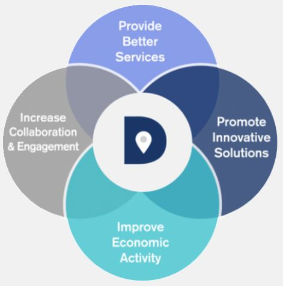 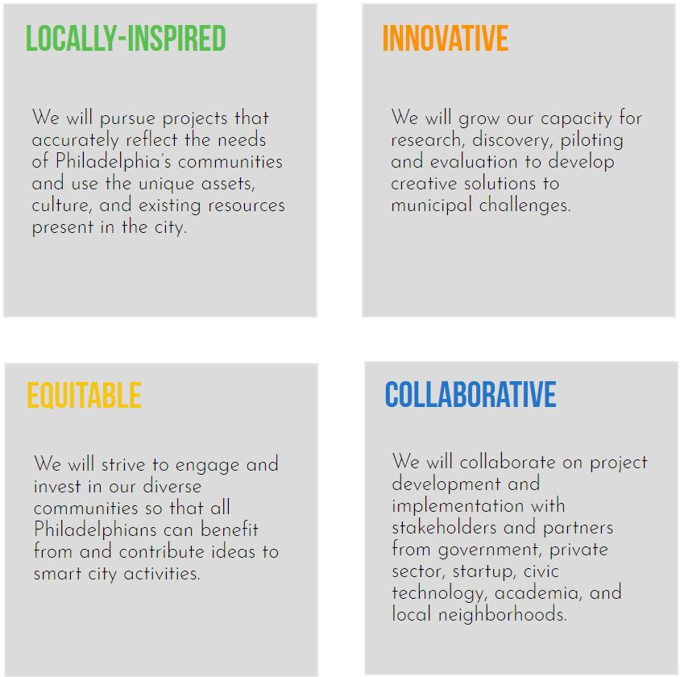
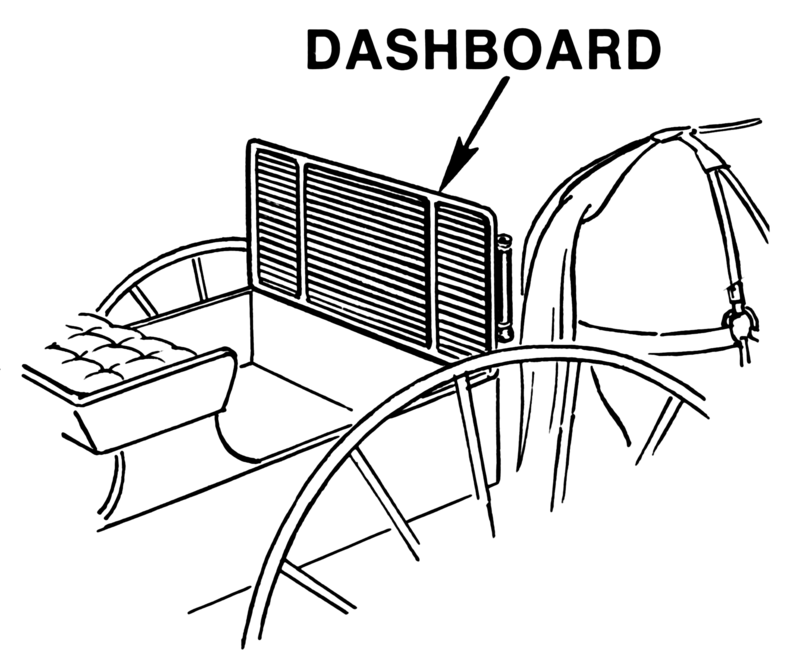
dublindashboard.ie | corkdashboard.ie
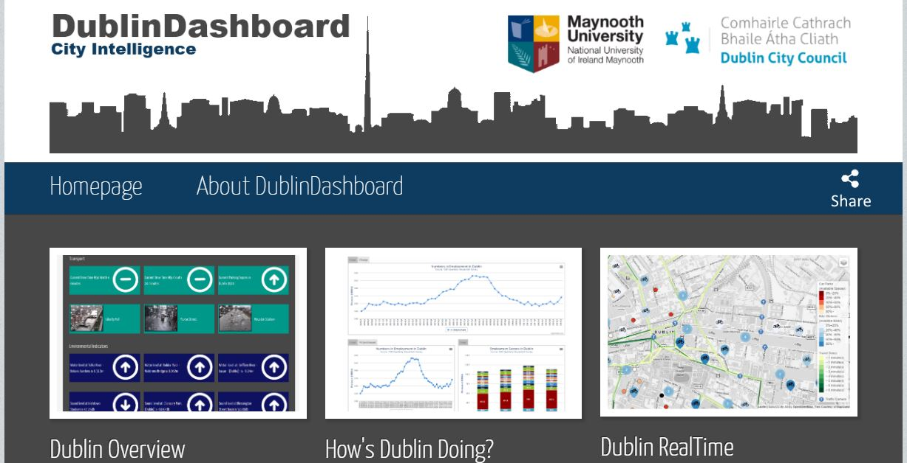 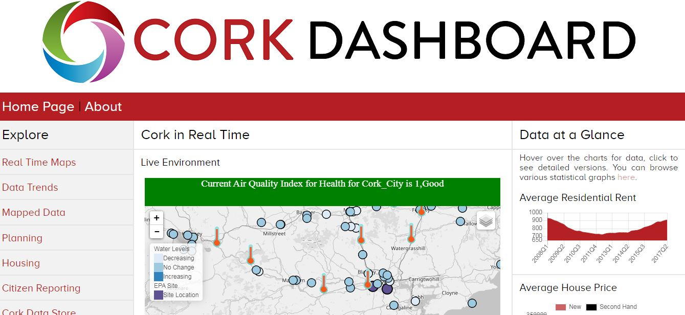Version 2.0: the redesign
Real-time open data in Dublin
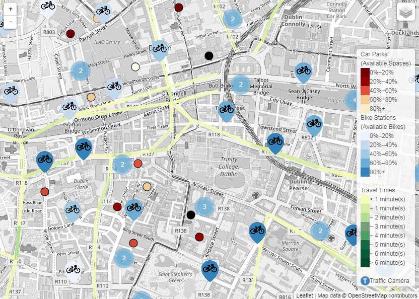 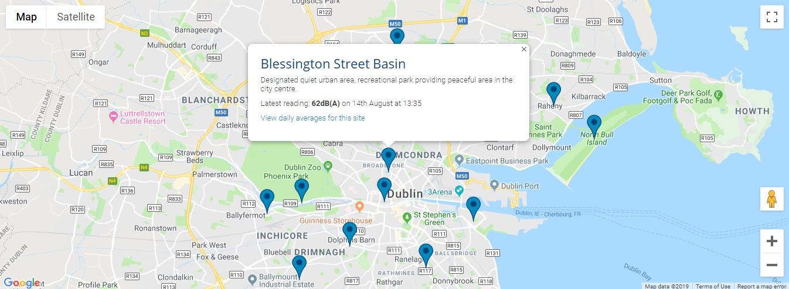
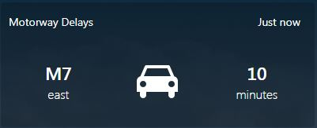
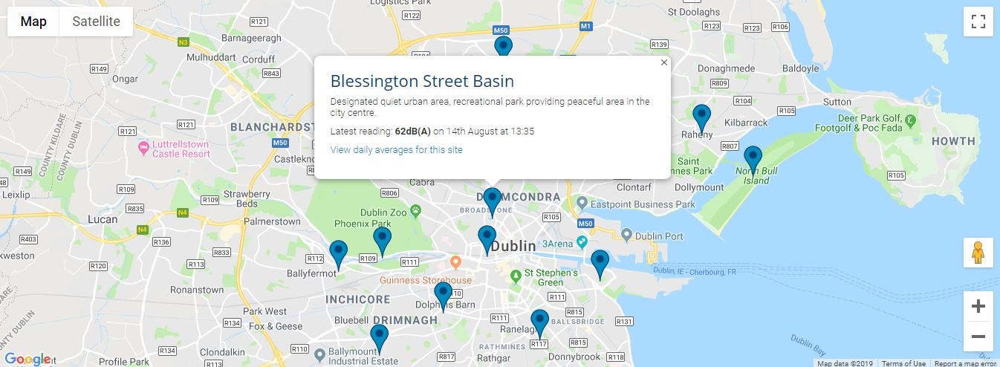
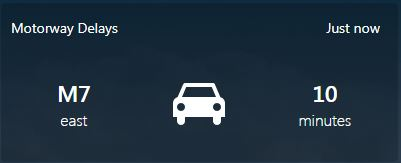
Real-time projects
 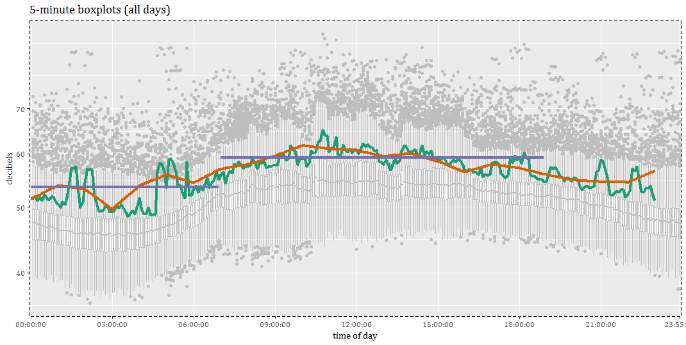
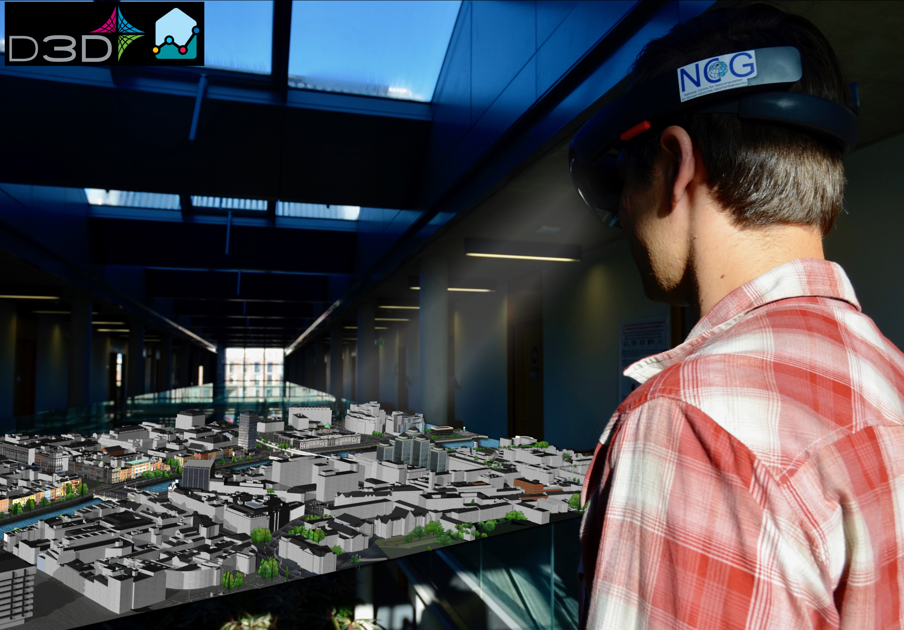
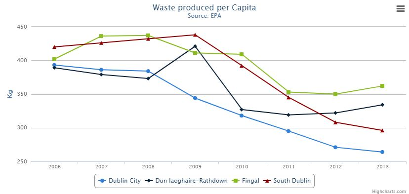
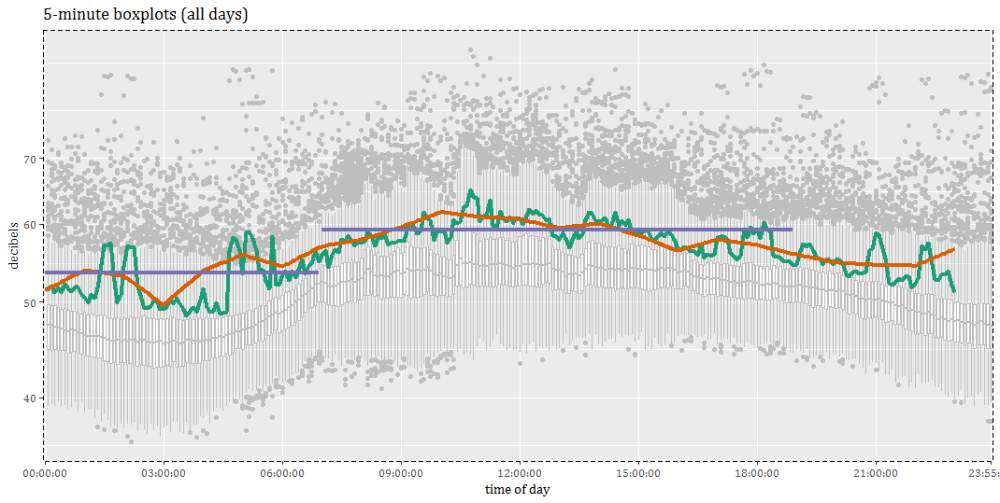
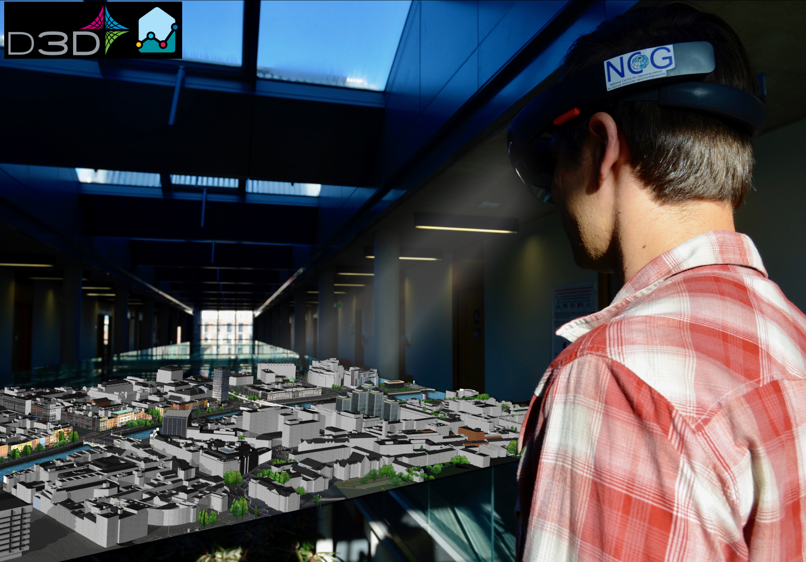
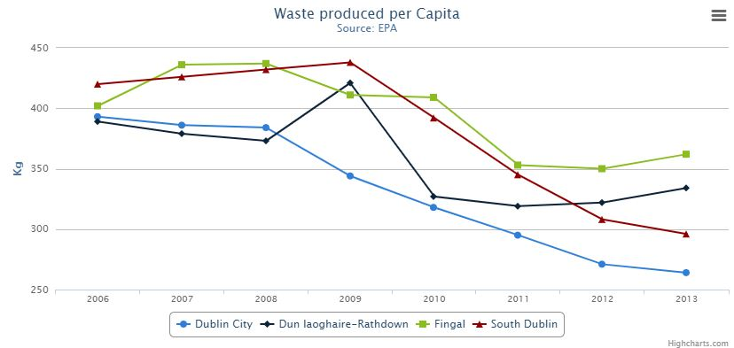
(Meta)Data for Decision
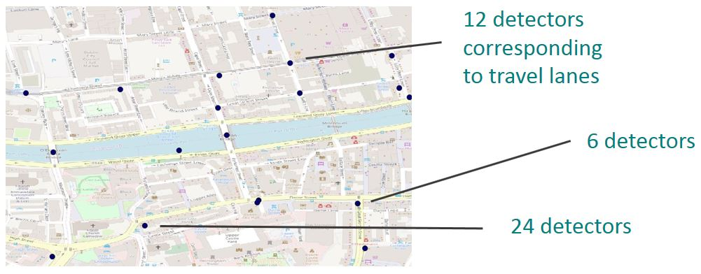Sam Stehle
Sam.Stehle@mu.ie
dublindashboard.ie
dashboards.maynoothuniversity.ie